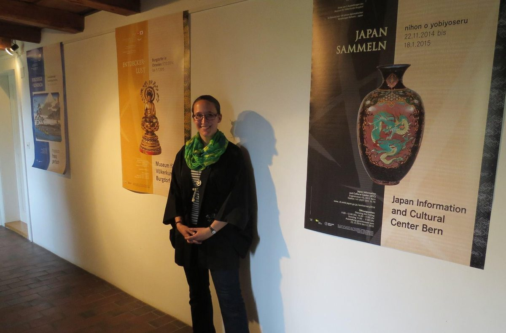

CV
Positions, education, exhibitions, grants, and service.
Positions
- 2026Ishibashi Foundation Lecturer for Digital CurationChair of East Asian Art History, University of Zurich. Block seminar “Displaying the Illustrated Book: Digital Curation Module.”
- 2024–presentPostdoctoral FellowChair of East Asian Art History (Prof. Dr. Ewa Machotka), University of Zurich. Coordinator of the Chair’s digital humanities activities.
- 2023–presentGuest Curator, Kurrus CollectionLinden-Museum Stuttgart. Edo- and Meiji-period illustrated books and prints.
- 2023–2024Cultural Promotion OfficerAmt für Kultur Graubünden. Co-developed the cantonal heritage platform PortaCultura GR.
- 2020–2022Scientific CoordinatorSwiss Art Research Infrastructure (SARI), University of Zurich. Project coordinator of Bilder der Schweiz Online, which located historical Swiss images on a map with citizen scientists.
- October 2016–June 2019Technical Research AssistantThe British Museum, London. Late Hokusai: Thought, Technique, Society.
- October 2015–September 2016Museum Intern, Japanese SectionThe British Museum, London
- 2013Museum InternCabinet d’arts graphiques, Musée d’Art et d’Histoire, Geneva
Earlier positions
- January 2016Photography Assistant, digitization project of the Art Research Center, Ritsumeikan University, KyotoDigitization of Japanese illustrated books at the Musées Royaux d’Art et d’Histoire, Brussels, and Maidstone Museum
- 2013–2015Founder, Vice-President, and Secretary, Völkerkundesammlung Burgdorf SocietyCo-curator of several exhibitions at the Völkerkundesammlung Burgdorf, 2014
- 2011–2014Research and Teaching Assistant, East Asian Art History, University of ZurichArchival research on the P. Rieder Collection of Japanese woodblock prints, a private netsuke collection, and the Völkerkundesammlung Burgdorf
Education
- 2018–2023PhD, East Asian Art History, summa cum laudeUniversity of Zurich. Dissertation on Hokusai’s drawing manuals Ono and Ryakuga. Open access in ZORA, the University of Zurich repository.
- 2015–2016MA Museum Studies, with DistinctionUniversity of East Anglia
- 2010–2015BA East Asian Art History, Japanese Studies, EducationUniversity of Zurich. Exchange year at Doshisha University, Kyoto.
Further training and fellowships
- August 2022Eighth Graduate Summer School in Japanese Early-modern PalaeographyUniversity of Cambridge
- June–August 2020Toshiba Foundation Fellow, dissertation researchYokohama
- September 2019–June 2020Nippon Foundation Fellow, advanced JapaneseInter-University Center for Japanese Language Studies (Stanford IUC), Yokohama
- July 2016Kadokawa Summer School “Animating Life”University of Tokyo
- March 2014–February 2015Language exchange, JapaneseDoshisha University, Kyoto
Exhibitions and collections

- 2023–2026Kurrus CollectionGuest curator. Research and digital curation. Linden-Museum Stuttgart.
- 2020–2022Bilder der Schweiz Online (Images of Switzerland Online)Project manager. Digital curation of data and research practices. University of Zurich.
- 2024Made in JapanEditorial language assistance. Kunstmuseum Basel.
- 2018Kofun-period displays, Mitsubishi Corporation Japanese GalleriesCo-curator. The British Museum.
- 2017Hokusai: beyond the Great WaveTechnical research assistant. The British Museum.
- 2016Looking Beyond: Conversations between John Berger and John ChristieCollection manager. Sainsbury Centre for Visual Arts, Norwich.
- 2014–2015Entdeckerlust: Burgdorfer in OstasienCo-curator. Schloss Burgdorf.
- 2014–2015Japan Sammeln: Nihon o YobiyoseruCo-curator. Japan Information and Cultural Center, Bern.
- 2014–2015Le geste suspenduIntern. Cabinet d’arts graphiques, Geneva.
- 2013Konnichiwa!Co-curator. Creaviva, Zentrum Paul Klee, Bern.
Awards and grants
- 2026FAN Award, University of ZurichOutstanding scientific achievement in the humanities and social sciences
- 2025–2026Career Grant, Graduate Research Center, University of ZurichDrawing from the Crowd, implementation
- 2025micro_innovation Grant, teaching fund of the University of Zurich (Universitäre Lehrförderung)AI_d
- 2024–2025The Nippon Foundation, Nippon Social Innovation ChallengeDrawing from the Crowd, prototype
- 2024Postgraduate Travel Scholarship, University of Zurich
- 2023Postgraduate Travel Scholarship, University of Zurich
Earlier scholarships and grants
- 2020Toshiba International Foundation, Summer Research ScholarshipJapan
- 2019–2020Nippon Foundation Fellowship and Alumni Scholarship of the Inter-University Center for Japanese Language StudiesStanford IUC, Yokohama
- 2018Japan Foundation and Toshiba International Foundation, Travel GrantFor the conference of the European Association of Japanese Resource Specialists (EAJRS)
- 2015–2016Great Britain Sasakawa Foundation, Postgraduate StudentshipUnited Kingdom
- 2014–2015Exchange Studentship, International Relations Office, University of ZurichJapan
Service
- Since 2024President, KIZUNAJapan Exchange Alumni Association in Switzerland. Member since 2010. Founder of its LinkedIn group, 2023.
- 2019–2025Lecturer, Swiss-Kansai Student Exchange Program Alumni Society
Memberships
- Since 2025European Association for Asian Art and Archaeology (EAAA)
- Since 2025Nihon kinsei bungaku kai 日本近世文学会Japanese Early Modern Literature Association
- Since 2025Association for Asian Studies (AAS)
- Since 2023Kokusai Ukiyo-e Gakkai 国際浮世絵学会International Ukiyo-e Society. Member and presenter.
- Since 2021The Nippon Foundation Scholars Association
- Since 2017European Association of Japanese Resource Specialists (EAJRS)
Talks are listed on the Talks page. Download the CV (PDF).